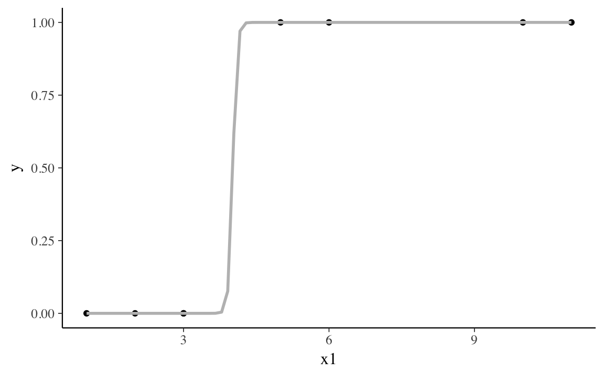
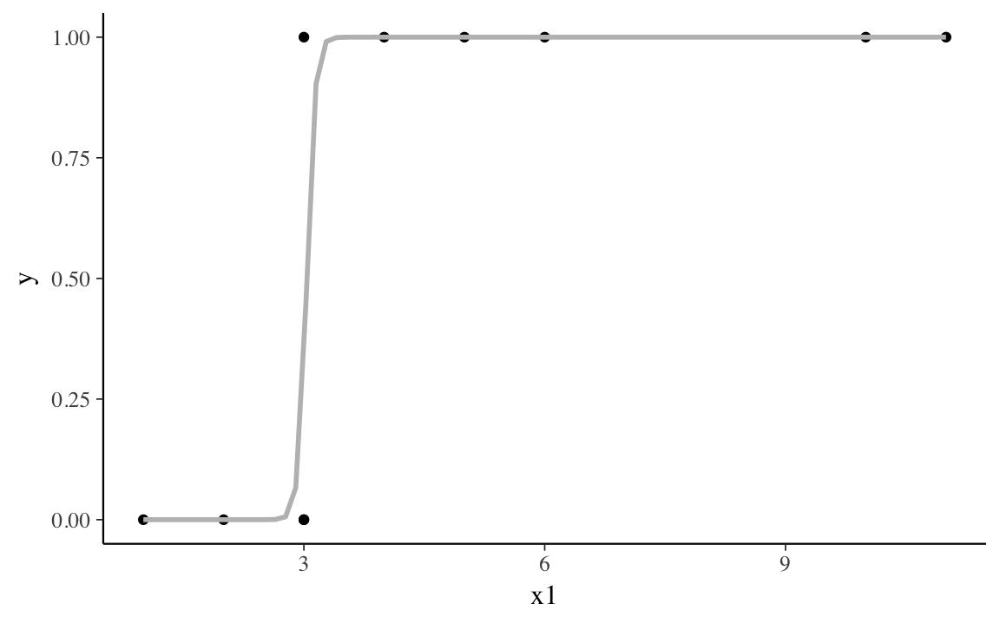

14 Separation
Prerequisites
14.1 Introduction
Separation is when a predictor perfectly predicts a binary response variable (Rainey 2016, @Zorn2005a).
For classification problems, there are three cases.
- complete separation: the predictor perfectly predicts both 0’s and 1’s.
- quasi-complete separation: the predictor perfectly predicts either 0’s or 1’s.
- overlap: the predictor does not perfectly predict either 0’s or 1’s.
Both complete separation and quasi-complete separation cause problems for binomial maximum likelihood estimators.
14.2 Complete Separation
The following data is an example of data with complete separation.10
CompleteSeparation
#> # A tibble: 8 x 3
#> y x1 x2
#> <dbl> <dbl> <dbl>
#> 1 0 1 3
#> 2 0 2 2
#> 3 0 3 -1
#> 4 0 3 -1
#> 5 1 5 2
#> 6 1 6 4
#> # ... with 2 more rowscount(CompleteSeparation, y, x1) %>%
group_by(x1) %>%
mutate(p = n / sum(n)) %>%
select(-n) %>%
spread(y, p, fill = 0)
#> # A tibble: 7 x 3
#> # Groups: x1 [7]
#> x1 `0` `1`
#> <dbl> <dbl> <dbl>
#> 1 1 1 0
#> 2 2 1 0
#> 3 3 1 0
#> 4 5 0 1
#> 5 6 0 1
#> 6 10 0 1
#> # ... with 1 more rowThe variable x1 perfectly separates y, since when x1 <= 3, y = 0,
and when x1 > 3, y = 1.
The MLE of the binomial likelihood with a logistic link function for this data has a finite log-likelihood, but the optimal line is a step function. This pushes the coefficient for the separating variable to \(\infty\).
ggplot(CompleteSeparation, aes(x = x1, y = y)) +
geom_point() +
geom_smooth(method = "glm", formula = y ~ x, se = FALSE,
method.args = list(family = binomial()), colour = "gray")
#> Warning: glm.fit: fitted probabilities numerically 0 or 1 occurred
If we estimate a binomial model with this data, it will warn that some observations have predicted probabilities close to zero or one.
fit_cs1 <- glm(y ~ x1 + x2, data = CompleteSeparation, family = binomial())
#> Warning: glm.fit: fitted probabilities numerically 0 or 1 occurred
summary(fit_cs1)
#>
#> Call:
#> glm(formula = y ~ x1 + x2, family = binomial(), data = CompleteSeparation)
#>
#> Deviance Residuals:
#> 1 2 3 4 5 6
#> -2.10e-08 -1.40e-05 -2.52e-06 -2.52e-06 1.56e-05 2.10e-08
#> 7 8
#> 2.10e-08 2.10e-08
#>
#> Coefficients:
#> Estimate Std. Error z value Pr(>|z|)
#> (Intercept) -66.10 183471.72 0 1
#> x1 15.29 27362.84 0 1
#> x2 6.24 81543.72 0 1
#>
#> (Dispersion parameter for binomial family taken to be 1)
#>
#> Null deviance: 1.1090e+01 on 7 degrees of freedom
#> Residual deviance: 4.5454e-10 on 5 degrees of freedom
#> AIC: 6
#>
#> Number of Fisher Scoring iterations: 24Additionally, the standard errors are implausibly large.
14.3 Quasi-Separation
The following generated data is an example of quasi-separation.[^quasi-separation]
| y | x1 | x2 |
|---|---|---|
| 0 | 1 | 3 |
| 0 | 2 | 0 |
| 0 | 3 | -1 |
| 0 | 3 | 4 |
| 1 | 3 | 1 |
| 1 | 4 | 0 |
| 1 | 5 | 2 |
| 1 | 6 | 7 |
| 1 | 10 | 3 |
| 1 | 11 | 4 |
The variable x1 almost separates y.
When x1 < 3, y = 0, and when x1 > 3, y = 1.
Only when x1 = 3, does y takes values of both 0 and 1.
count(QuasiSeparation, y, x1) %>%
group_by(x1) %>%
mutate(p = n / sum(n)) %>%
select(-n) %>%
spread(y, p, fill = 0)
#> # A tibble: 8 x 3
#> # Groups: x1 [8]
#> x1 `0` `1`
#> <dbl> <dbl> <dbl>
#> 1 1 1 0
#> 2 2 1 0
#> 3 3 0.667 0.333
#> 4 4 0 1
#> 5 5 0 1
#> 6 6 0 1
#> # ... with 2 more rowsIn the quasi-separation case, like the complete separation case, the best line is something close to a step function. Unlike the complete separation case, the coefficient for the separating variable takes a finite, but very large value.
ggplot(QuasiSeparation, aes(x = x1, y = y)) +
geom_point() +
geom_smooth(method = "glm", formula = y ~ x, se = FALSE,
method.args = list(family = binomial()), colour = "gray")
#> Warning: glm.fit: fitted probabilities numerically 0 or 1 occurred
fit_qs1 <- glm(y ~ x1 + x2, data = QuasiSeparation, family = binomial())
#> Warning: glm.fit: fitted probabilities numerically 0 or 1 occurred
summary(fit_qs1)
#>
#> Call:
#> glm(formula = y ~ x1 + x2, family = binomial(), data = QuasiSeparation)
#>
#> Deviance Residuals:
#> Min 1Q Median 3Q Max
#> -1.0042 -0.0001 0.0000 0.0000 1.4689
#>
#> Coefficients:
#> Estimate Std. Error z value Pr(>|z|)
#> (Intercept) -58.076 17511.903 0.0 1.00
#> x1 19.178 5837.301 0.0 1.00
#> x2 -0.121 0.610 -0.2 0.84
#>
#> (Dispersion parameter for binomial family taken to be 1)
#>
#> Null deviance: 13.4602 on 9 degrees of freedom
#> Residual deviance: 3.7792 on 7 degrees of freedom
#> AIC: 9.779
#>
#> Number of Fisher Scoring iterations: 2114.4 Weak Priors
While the likelihood is unidentified, weakly informative priors on the regression coefficients will deal with separation. \[ \beta_k \sim \dnorm(0, 2.5) \] where all the columns of \(\code{x}\) are assumed to have unit variance (or be otherwise standardized). The half-Cauchy prior, \(\dhalfcauchy(0, 2.5)\), suggested in Gelman et al. (2008) is insufficiently informative to to deal with separation (Ghosh, Li, and Mitra 2015), but finite-variance weakly informative Student-t or Normal distributions will work.
These are the priors suggested by Stan and used by default in rstanarm rstanarm.
When estimated with stan_glm(), the coefficients of both the complete separation and quasi-separated data are finite.
fit_cs2 <- stan_glm(y ~ x1 + x2, data = CompleteSeparation,
family = binomial())
summary(fit_cs2)
#>
#> Model Info:
#>
#> function: stan_glm
#> family: binomial [logit]
#> formula: y ~ x1 + x2
#> algorithm: sampling
#> priors: see help('prior_summary')
#> sample: 4000 (posterior sample size)
#> observations: 8
#> predictors: 3
#>
#> Estimates:
#> mean sd 2.5% 25% 50% 75% 97.5%
#> (Intercept) -6.2 2.7 -12.1 -7.8 -5.9 -4.3 -1.6
#> x1 1.1 0.4 0.3 0.8 1.0 1.3 2.1
#> x2 0.9 0.8 -0.5 0.3 0.8 1.3 2.5
#> mean_PPD 0.5 0.1 0.2 0.4 0.5 0.6 0.8
#> log-posterior -8.4 1.4 -11.8 -9.1 -8.1 -7.4 -6.9
#>
#> Diagnostics:
#> mcse Rhat n_eff
#> (Intercept) 0.1 1.0 2090
#> x1 0.0 1.0 2114
#> x2 0.0 1.0 2412
#> mean_PPD 0.0 1.0 3796
#> log-posterior 0.0 1.0 1641
#>
#> For each parameter, mcse is Monte Carlo standard error, n_eff is a crude measure of effective sample size, and Rhat is the potential scale reduction factor on split chains (at convergence Rhat=1).fit_qs2 <- stan_glm(y ~ x1 + x2, data = QuasiSeparation, family = binomial())
summary(fit_qs2)
#>
#> Model Info:
#>
#> function: stan_glm
#> family: binomial [logit]
#> formula: y ~ x1 + x2
#> algorithm: sampling
#> priors: see help('prior_summary')
#> sample: 4000 (posterior sample size)
#> observations: 10
#> predictors: 3
#>
#> Estimates:
#> mean sd 2.5% 25% 50% 75% 97.5%
#> (Intercept) -3.7 1.9 -7.6 -4.9 -3.6 -2.3 -0.2
#> x1 1.1 0.5 0.2 0.7 1.1 1.4 2.2
#> x2 0.0 0.4 -0.7 -0.2 0.0 0.3 0.9
#> mean_PPD 0.6 0.2 0.3 0.5 0.6 0.7 0.9
#> log-posterior -10.5 1.3 -13.8 -11.1 -10.2 -9.5 -9.0
#>
#> Diagnostics:
#> mcse Rhat n_eff
#> (Intercept) 0.0 1.0 2746
#> x1 0.0 1.0 1596
#> x2 0.0 1.0 2469
#> mean_PPD 0.0 1.0 3688
#> log-posterior 0.0 1.0 1509
#>
#> For each parameter, mcse is Monte Carlo standard error, n_eff is a crude measure of effective sample size, and Rhat is the potential scale reduction factor on split chains (at convergence Rhat=1).14.5 Example: Support of ACA Medicaid Expansion
This example is from Rainey (2016) from the original paper Barrilleaux and Rainey (2014) with replication code here. Load the data included in the jrnold.bayes.notes package:
The observations are the governors of the US states.
The outcome variable is their votes on the Affordable Care Act (ACA) Medicaid Expansion.
The dataset includes multiple predictors, including whether the governor is a Republican (gop_governor).
Add Democratic governors supported the expansion (gop_governor == 0),
and only Republican governors (gop_governor == 1) opposed it (though not all).
This is a case of quasi-separation.
What happens when this model is estimated with MLE by glm()?
aca_fmla <-
oppose_expansion ~ gop_governor + percent_favorable_aca + gop_leg +
percent_uninsured + bal2012 + multiplier + percent_nonwhite +
percent_metro
fit_aca1 <- glm(aca_fmla, data = politics_and_need, family = binomial())
summary(fit_aca1)
#>
#> Call:
#> glm(formula = aca_fmla, family = binomial(), data = politics_and_need)
#>
#> Deviance Residuals:
#> Min 1Q Median 3Q Max
#> -1.738 -0.455 0.000 0.591 2.350
#>
#> Coefficients:
#> Estimate Std. Error z value Pr(>|z|)
#> (Intercept) -1.94e+01 3.22e+03 -0.01 1.00
#> gop_governor 2.03e+01 3.22e+03 0.01 0.99
#> percent_favorable_aca 7.31e-03 8.88e-02 0.08 0.93
#> gop_leg 2.43e+00 1.48e+00 1.64 0.10
#> percent_uninsured 1.12e-01 2.72e-01 0.41 0.68
#> bal2012 -7.12e-04 1.14e-02 -0.06 0.95
#> multiplier -3.22e-01 1.08e+00 -0.30 0.77
#> percent_nonwhite 4.52e-02 8.25e-02 0.55 0.58
#> percent_metro -7.75e-02 4.74e-02 -1.64 0.10
#>
#> (Dispersion parameter for binomial family taken to be 1)
#>
#> Null deviance: 62.687 on 49 degrees of freedom
#> Residual deviance: 31.710 on 41 degrees of freedom
#> AIC: 49.71
#>
#> Number of Fisher Scoring iterations: 19Now estimate with rstanarm using the default weakly informative priors.
fit_aca2 <- stan_glm(aca_fmla, data = politics_and_need,
family = "binomial",
show_messages = FALSE, refresh = -1,
verbose = FALSE)summary(fit_aca2)
#>
#> Model Info:
#>
#> function: stan_glm
#> family: binomial [logit]
#> formula: oppose_expansion ~ gop_governor + percent_favorable_aca + gop_leg +
#> percent_uninsured + bal2012 + multiplier + percent_nonwhite +
#> percent_metro
#> algorithm: sampling
#> priors: see help('prior_summary')
#> sample: 4000 (posterior sample size)
#> observations: 50
#> predictors: 9
#>
#> Estimates:
#> mean sd 2.5% 25% 50% 75% 97.5%
#> (Intercept) -3.6 5.1 -13.6 -6.9 -3.6 -0.2 6.5
#> gop_governor 3.9 1.6 1.2 2.8 3.8 4.9 7.2
#> percent_favorable_aca 0.0 0.1 -0.2 -0.1 0.0 0.0 0.1
#> gop_leg 2.4 1.3 0.0 1.5 2.3 3.2 5.1
#> percent_uninsured 0.1 0.2 -0.2 0.0 0.1 0.2 0.5
#> bal2012 0.0 0.0 0.0 0.0 0.0 0.0 0.0
#> multiplier -0.3 1.0 -2.3 -0.9 -0.3 0.4 1.8
#> percent_nonwhite 0.0 0.1 -0.1 0.0 0.0 0.1 0.1
#> percent_metro -0.1 0.0 -0.1 -0.1 -0.1 0.0 0.0
#> mean_PPD 0.3 0.1 0.2 0.3 0.3 0.4 0.4
#> log-posterior -33.3 2.4 -38.9 -34.6 -32.9 -31.6 -29.8
#>
#> Diagnostics:
#> mcse Rhat n_eff
#> (Intercept) 0.1 1.0 2754
#> gop_governor 0.0 1.0 2598
#> percent_favorable_aca 0.0 1.0 3106
#> gop_leg 0.0 1.0 3302
#> percent_uninsured 0.0 1.0 2520
#> bal2012 0.0 1.0 2774
#> multiplier 0.0 1.0 3142
#> percent_nonwhite 0.0 1.0 2253
#> percent_metro 0.0 1.0 3371
#> mean_PPD 0.0 1.0 4000
#> log-posterior 0.1 1.0 1385
#>
#> For each parameter, mcse is Monte Carlo standard error, n_eff is a crude measure of effective sample size, and Rhat is the potential scale reduction factor on split chains (at convergence Rhat=1).14.6 Questions
Estimate the model using
stan_glm()with a flat prior, and a Student-t distribution withdf = 3. Compare the coefficient estimates and the efficiency (\(\hat{R}\), ESS).Ghosh, Li, and Mitra (2015) suggest that a Half-Cauchy prior distribution is insufficient for dealing with separation. Try estimating this model with a Cauchy prior with a scale of 2.5. Compare the coefficient estimates and efficiency (\(\hat{R}\), ESS).
See the other application in Rainey (2016) on nuclear proliferation and war. Replicate the analysis with the informative, skeptical, and enthusiastic priors. The data can be found at carlislerainey/priors-for-separation.
14.7 References
See Albert and Anderson (1984), Heinze and Schemper (2002), and Heinze (2006) for discussion about separation.
Rainey (2016) provides a mixed MLE/Bayesian simulation based approach to apply a prior to the variable with separation, while keeping the other coefficients at their MLE values. Since the results are highly sensitive to the prior, multiple priors should be tried (informative, skeptical, and enthusiastic).
Firth (1993) suggests a data-driven Jeffreys invariant prior. This prior was also recommended in Zorn (2005).
Greenland and Mansournia (2015) suggest a log-F prior distribution which has an intuitive interpretation related to the number of observations.